Contents
clear; clc; close all;
a)
load('constrainedLS.mat')
The original optimization problem can be stated as:
 , s.t.
, s.t. 
Let D be the data matrix which has the data points as its rows and the beta is the vector of the parameters that we are interested in. Hence  becomes a vector with nth row being
becomes a vector with nth row being  or equivalently 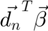
or equivalently 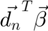
Using the definition of the norm, we can then see that:

Thus, the optimization problem can be re-written in the matrix form as:
 , s.t.
, s.t.
Now we can simplify the problem by performing SVD over the data matrix D. Doing so, we get:

Substituting the SVD back into the matrix form of the optimization problem:
 , s.t.
, s.t.
Since U is a transformation matrix, we can ignore it for the minimization problem:
 , s.t.
, s.t.
Let 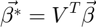
Therefore,

The minimization problem then becomes:
 , s.t.
, s.t. 
, s.t. 
Let 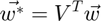
Therefore,
, s.t. 
Now S is a diagonal matrix of shape 300 * 2. Hence it has the first two rows with non-zero diagonal elements. All the remaining rows of S are zeros. Therefore, the transformation of  by S creates a 300 dimensional vector with only two entries and the other entries being 0. Hence, the minimization problem can be simplified by considering only the first two rows of S. Let this matrix be called S*. The optimization problem can hence be restated as:
by S creates a 300 dimensional vector with only two entries and the other entries being 0. Hence, the minimization problem can be simplified by considering only the first two rows of S. Let this matrix be called S*. The optimization problem can hence be restated as:
 , s.t.
, s.t. 
Let 
Therefore,

Here is the pseudoinverse of and is an orthogonal matrix.
Thus, we have:

The optimization problem now becomes:
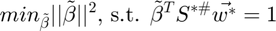
Let
Therefore,
 , s.t.
, s.t. 
We can re-write and 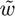 in terms of  and 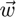
and 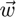


b)
Performing SVD on the original data:
[U, S, V] = svd(data); Ss = S(1:2, :);
The shortest vector  is the one that lies along the direction of . Hence the angle between and is 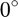
is the one that lies along the direction of . Hence the angle between and is 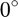
The constraint is basically a dot product of the vectors and hence can also be written as:
Since  , we have
, we have 
The constraint then becomes:

Therefore,

This gives the length of . This vector points in the same direction as and hence the vector can be represented as:

Substituting the length of calculated above:

w_tilde = pinv(Ss)*V'*w; w_tilde_hat = w_tilde/sqrt(sum(w_tilde.^2)); beta_tilde_opt = w_tilde_hat * 1/sqrt(sum(w_tilde.^2)); beta_tilde_opt_fplot = [zeros(2, 1), beta_tilde_opt]; slope_beta_tilde_opt = beta_tilde_opt(2)/beta_tilde_opt(1); slope_perp = -1/slope_beta_tilde_opt; intercept_perp = beta_tilde_opt(2) - slope_perp * beta_tilde_opt(1); figure(1); plot(beta_tilde_opt_fplot(1, :), beta_tilde_opt_fplot(2, :), 'r-o', 'MarkerSize', 5, ... 'DisplayName', '$\tilde{\beta}_{opt}$') hold on; x_perp = xlim; y_perp = slope_perp * x_perp + intercept_perp * [1, 1]; plot(x_perp, y_perp, 'b', 'LineWidth', 2, ... 'DisplayName', 'perp line') title('Space of beta tilde') hl = legend('show'); set(hl, 'Interpreter', 'latex')

c)
From the previous transformations we have:
Therefore,

Therefore,

Therefore,

Computing from we just computed, we get:
beta_opt = V * pinv(Ss)*beta_tilde_opt; beta_opt_fplot = [zeros(2, 1), beta_opt]; w_fplot = [zeros(2, 1), w];
The original contraint line is perpendicular to the projection of  on
on
The projection can be computed as:
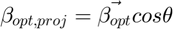
where,  is the angle between the two vectors, the cosine of which can be computed as:
is the angle between the two vectors, the cosine of which can be computed as:
scalar_proj = beta_opt' * w / norm(w, 2); beta_opt_proj = scalar_proj * w / norm(w, 2); beta_opt_proj_fplot = [zeros(2, 1), beta_opt_proj]; slope_beta_proj = beta_opt_proj(2)/beta_opt_proj(1); slope_perp_org = -1/slope_beta_proj; intercept_perp_org = beta_opt_proj(2) - slope_perp_org * beta_opt_proj(1); figure(2); plot(beta_opt_fplot(1, :), beta_opt_fplot(2, :), 'r-', 'MarkerSize', 5, ... 'DisplayName', '$\vec{\beta}_{opt}$') hold on; plot(w_fplot(1, :), w_fplot(2, :), 'k-', 'MarkerSize', 5, ... 'DisplayName', '$\vec{w}$') plot(data(:, 1), data(:, 2), 'o') x_perp_org = xlim; y_perp_org = slope_perp_org * x_perp_org + intercept_perp_org * [1, 1]; plot(x_perp_org, y_perp_org, 'b', 'LineWidth', 2, ... 'DisplayName', 'perp line') title('Original space') hl = legend('show'); set(hl, 'Interpreter', 'latex')